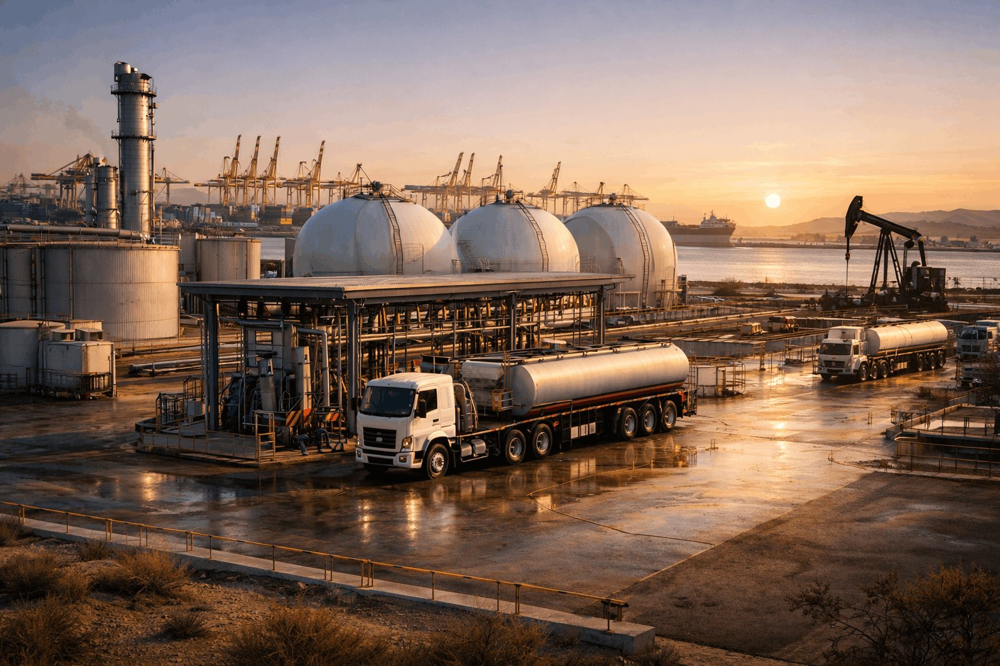
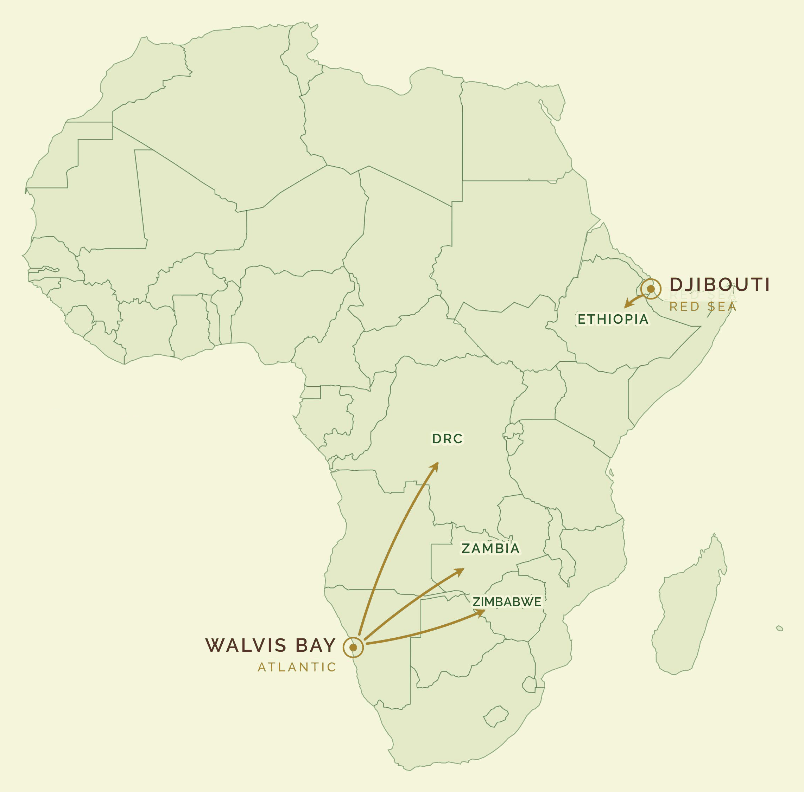

Bulk Storage Infrastructure
Strategic storage built for reliability, throughput and the compliance standards required for long-life operations.
- Tank farms & terminal systems
- Bulk load terminals & metering
- Maintenance, training & readiness
22°57′S 14°30′E · WALVIS BAY · ATLANTIC GATEWAY
Strategic storage, bulk handling and corridor logistics. We develop integrated platforms that keep supply chains moving from port to inland markets, and keep growth on schedule.

PORT → STORAGE → RAIL → MARKET
Every TAG platform is designed as part of a single supply chain. Product lands at the coast, is stored and metered at scale, and moves inland by rail and road to the markets that need it.
Storage and terminal systems engineered for reliability, turnaround and metered accountability.
Strategic capacity that buffers supply shocks and strengthens energy security for the region.
Rail integration and corridor design that lower delivered cost into landlocked markets.
CORE CAPABILITIES
Four capabilities aligned to energy infrastructure, logistics execution and scalable regional delivery — delivered through the active platforms below.
Strategic storage built for reliability, throughput and the compliance standards required for long-life operations.
Integrated rail and road distribution designed to reduce delays, improve access and lower delivered cost inland.
Supporting infrastructure that improves fleet flow, reduces congestion and adds dependable services at key operating points.
A disciplined delivery model built around compliance, transparency and infrastructure that scales with market demand.
ACTIVE PLATFORMS
A mission-led platform focused on strategic capacity, efficient distribution and stronger energy access across the region.

Strategic infrastructure designed to expand storage capacity, improve throughput and support resilient energy flows into regional markets.
Market-facing energy support built on disciplined controls, logistics capability and a long-term view of regional demand.
Rail and road distribution infrastructure that connects coastal capacity to inland demand, dependably and at lower delivered cost.
OPERATIONAL FOOTPRINT
Regional execution with a focus on energy access, inland supply efficiency and strategic African trade routes.

Deep-water port access with rail-linked bulk storage, serving inland corridor markets across the region.
Projects designed to improve throughput, strengthen compliance and support more reliable supply into growing inland markets.
Durable infrastructure platforms that strengthen energy security, enable trade and support sustainable growth across Africa.
Discuss a partnershipFROM THE COMPANY PAGE
Our latest updates, market perspective and infrastructure progress, straight from our LinkedIn.
LIVE FEED
Live market signals shaping energy, infrastructure and trade across Africa.
START A CONVERSATION
Reach out for strategic discussions on infrastructure, logistics, market development and long-term energy growth.